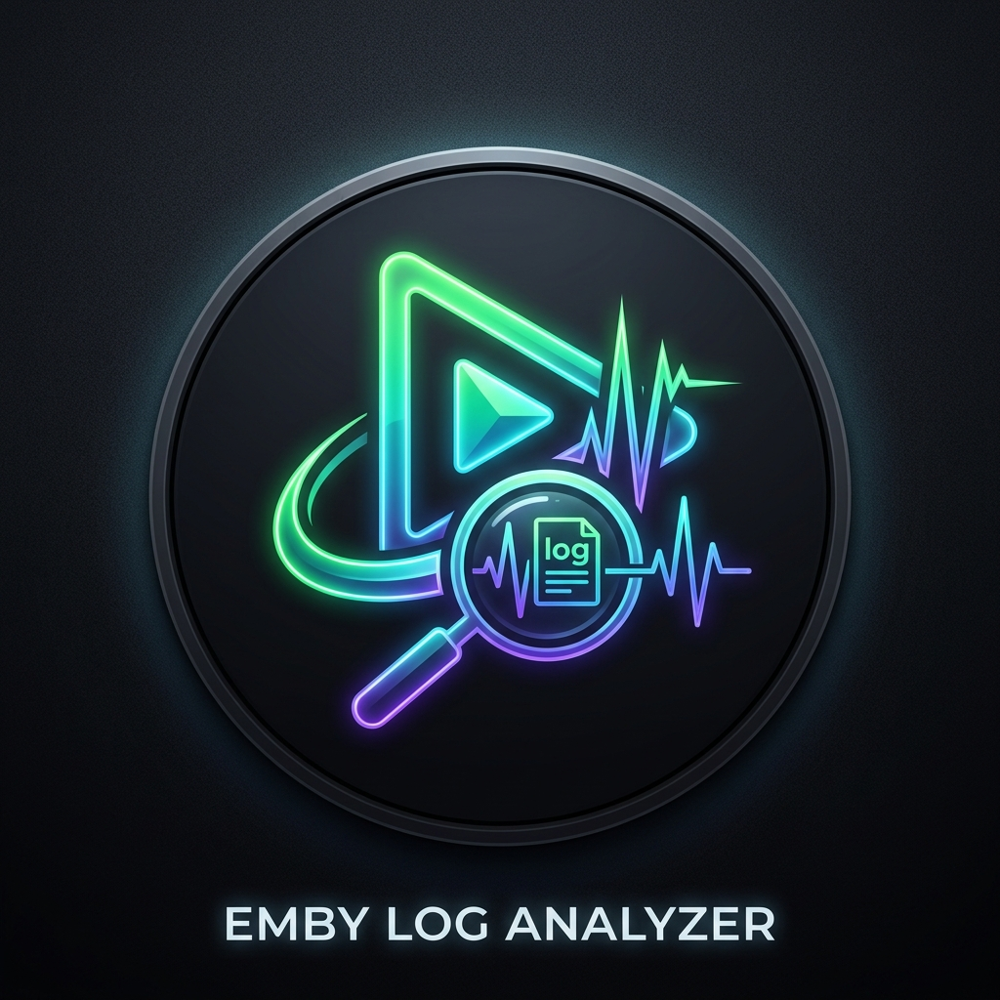

Ready for Log Analysis
Select or drag & drop Emby Server and FFmpeg transcode logs to diagnose playback, transcoding, and streaming issues.

Select or drag & drop Emby Server and FFmpeg transcode logs to diagnose playback, transcoding, and streaming issues.